Hollow Kgnith
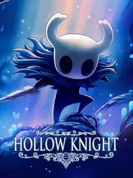
Es un videojuego de acción y exploración en 2D desarrollado y publicado por Team Cherry. En esta aventura,
el jugador controla a un misterioso caballero que debe explorar el enorme reino subterráneo de Hallownest,
un lugar lleno de secretos, enemigos y desafíos. Lo que me gustó de este juego son sus combates exigentes,
su estilo artístico melancólico y un mapa conectado entre diferentes zonas que invita a explorar y descubrir
nuevos caminos y recompensa al jugador por ello con articulos del juego que sirven para la historia de este.
Sitio Web Oficial del Juego
Ver más
Fortnite Battle Royal
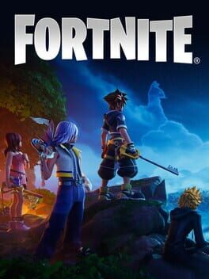
Es un popular videojuego en línea desarrollado por Epic Games, conocido por su dinámico modo Battle Royale,
en el que 100 jugadores se enfrentan hasta que solo uno queda en pie. Una de sus características más
llamativas es la posibilidad de construir estructuras durante las partidas.Actualmente Fortnite tiene varios
modos que se adaptan al jugador y ese detalle es lo que me gusta porque tambien tiene un modo llamado "Mapas
de Creativo" que es un modo de mapas de juegos hecho por la comunidad y hay bastante variedad en ello.
Sitio Web Oficial del Juego
Ver más
Assassin's Creed IV: Black Flag
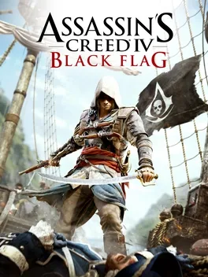
Es un videojuego de acción y mundo abierto ambientado en el Caribe durante la Edad de Oro de la Piratería.
En esta entrega, el jugador se pone en el papel de un pirata que recorre diferentes islas y territorios
mientras participa en aventuras y enfrentamientos. Sin embargo, yo considero que uno de sus mayores
atractivos es la posibilidad de controlar tu propio barco, lo que permite explorar el mar, enfrentarse a
otras embarcaciones y participar en intensos combates navales.
Sitio Web Oficial del Juego
Ver más
Marvel's Spider-Man
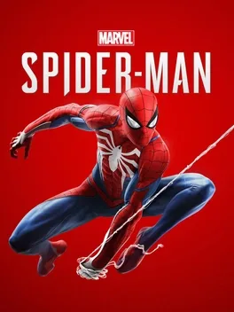
Es un videojuego de acción y mundo abierto en el que controlamos a Peter Parker mientras combate el crimen
en la ciudad de Nueva York. Una de sus características más destacadas es el sistema de desplazamiento
mediante telarañas, que permite moverse libremente entre los edificios de la ciudad. Además, sus movimientos
son tan fluidos que recorrer Nueva York se convierte en una de las experiencias más entretenidas del juego y
en lo personal es algo satisfactorio si eres fan del personaje.
Sitio Web Oficial del Juego
Ver más
Titanfal 2
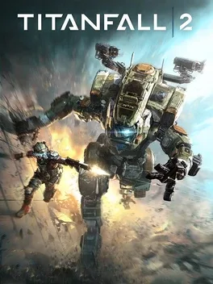
Es un videojuego de disparos en primera persona ambientado en un futuro donde los enfrentamientos ocurren
entre soldados y enormes máquinas de combate. Lo que lo diferencia de otros juegos del mismo género es su
sistema de movimiento, que permite correr por las paredes, saltar entre edificios y desplazarse rápidamente
por los escenarios. Asimismo, ofrece la posibilidad de combatir tanto a pie como pilotando gigantescos
robots llamados Titanes, lo cualquiero que ese detalle añade mucha variedad y dinamismo a las partidas.
Sitio Web Oficial del Juego
Ver más
Resident Evil 4
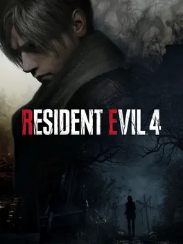
Es un videojuego de terror y supervivencia en el que el agente Leon S. Kennedy viaja a una aldea alejada
para rescatar a la hija del presidente. Durante su misión debe enfrentarse a numerosos enemigos y
situaciones peligrosas que ponen a prueba su capacidad para sobrevivir. Este título es especialmente
reconocido porque popularizó la cámara situada sobre el hombro del personaje, una característica que influyó
en muchos videojuegos posteriores. Además, combina momentos de tensión y terror con enfrentamientos llenos
de acción, por esta razón es uno de los titulos de la franquicia más reconocido por la comunidad.
Sitio Web Oficial del Juego
Ver más
Grand Theft Auto V (GTA 5)
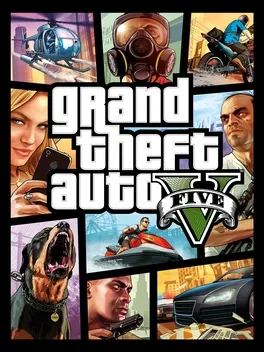
Es un videojuego de acción y mundo abierto que cuenta la historia de tres protagonistas involucrados en
diferentes actividades criminales y robos en la ciudad ficticia de Los Santos. Una de sus mayores ventajas
es la libertad que ofrece al jugador para recorrer la ciudad, realizar misiones y participar en distintas
actividades. Por otro lado, también destaca por su humor y las críticas que presenta sobre la sociedad
actual. A esto se suma su modo GTA Online, que ha mantenido el interés de muchos jugadores a lo largo de los
años y mucho más porque este modo se puede jugar con amigos y poder pasar divertidos momentos en compañia de
amigos.
Sitio Web Oficial del Juego
Ver más
Rocket League
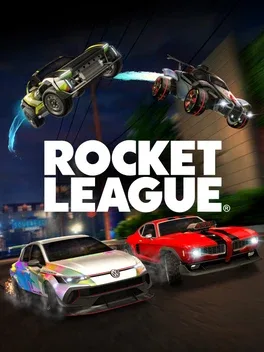
Es un videojuego deportivo que combina el fútbol con la conducción de vehículos, creando una experiencia
bastante diferente a la de otros juegos del género. Su objetivo principal consiste en utilizar autos para
golpear una pelota gigante e intentar marcar goles en la portería del equipo contrario. Además, gran parte
de su atractivo está en el manejo de las físicas, ya que los jugadores deben aprender a controlar sus
vehículos, realizar saltos y hasta volar para conseguir mejores jugadas. Por esta razon, considero que
Rocket League ayuda mucho al trabajo en equipo para coordinar jugadas, pases y lograr hacer todo correcto
para conseguir una victoria.
Sitio Web Oficial del Juego
Ver más
Minecraft
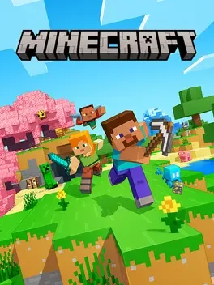
Es un videojuego de supervivencia y construcción que se caracteriza por su particular estilo visual basado
en bloques. Su principal atractivo es la libertad que ofrece a los jugadores para crear y explorar
diferentes mundos utilizando los materiales que encuentran durante sus aventuras. De esta manera, es posible
construir desde pequeñas viviendas hasta enormes ciudades e incluso mecanismos complejos que funcionan
mediante sistemas internos del juego. Gracias a todas estas posibilidades, se ha convertido en uno de los
videojuegos más populares y vendidos de la historia, ya que es un juego que se divierte jugando solo o
jugando con amigos mediante servidores.
Sitio Web Oficial del Juego
Ver más
ARK: Survival Ascended
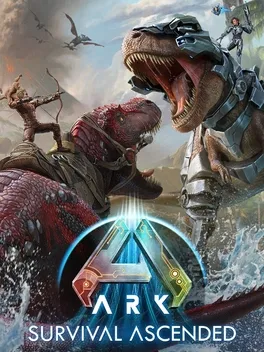
Es un videojuego de supervivencia en el que el jugador despierta en una isla llena de criaturas
prehistóricas y diferentes peligros. Al comenzar, debe conseguir alimentos, recolectar materiales y fabricar
herramientas para mantenerse con vida. Sin embargo, una de sus características más interesantes en lo
personal es la posibilidad de cazar, domesticar y criar dinosaurios, que posteriormente pueden utilizarse
para desplazarse, combatir contra otras criaturas o conseguir recursos.
Sitio Web Oficial del Juego
Ver más
Euro Truck Simulator 2
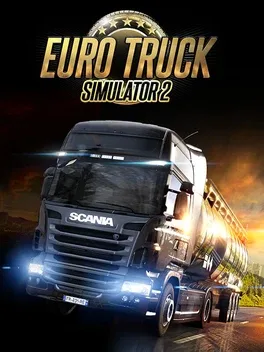
Es un videojuego de simulación en el que el jugador se pone al volante de diferentes camiones para
transportar mercancías por las carreteras de Europa. A medida que avanza, debe cumplir con las entregas,
respetar las normas de tránsito y administrar sus ganancias para mejorar sus vehículos y desarrollar su
propia empresa de transporte. Además, destaca por ofrecer una experiencia de conducción realista y
tranquila, lo que permite disfrutar de los paisajes y recorrer largas distancias sin necesidad de competir
contra otros jugadores y este detalle es algo maravilloso poder manejar tu propio camión e ir escuchando tu
música favorita o podcast de fondo mientras conduces.
Sitio Web Oficial del Juego
Ver más
Tomb Raider
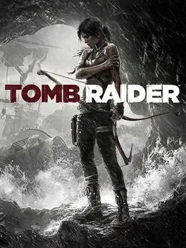
Es un videojuego de aventura y acción protagonizado por Lara Croft, una arqueóloga que debe explorar
diferentes lugares, superar obstáculos y resolver acertijos. En sus entregas más modernas, la historia
presenta una versión más joven del personaje y muestra cómo debe enfrentarse a situaciones peligrosas para
sobrevivir. Además, combina la exploración con los combates y la resolución de desafíos, ofreciendo una
aventura en la que el jugador debe adaptarse constantemente a los distintos entornos lo cual junto a sus
expectaculares paisajes son algo que el jugador le interesa muchisimo.
Sitio Web Oficial del Juego
Ver más